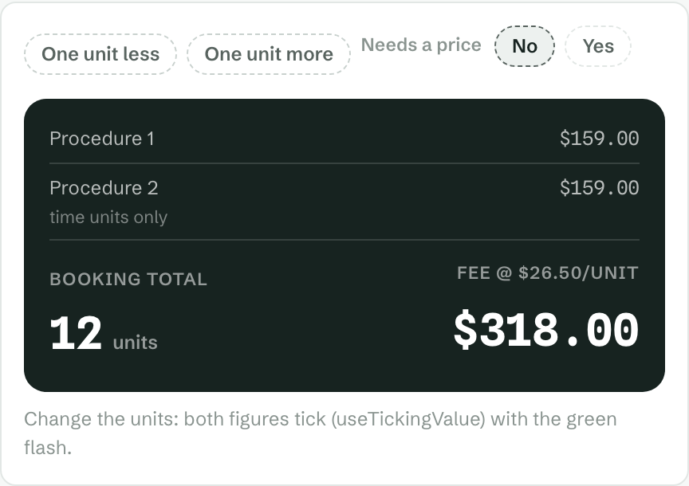
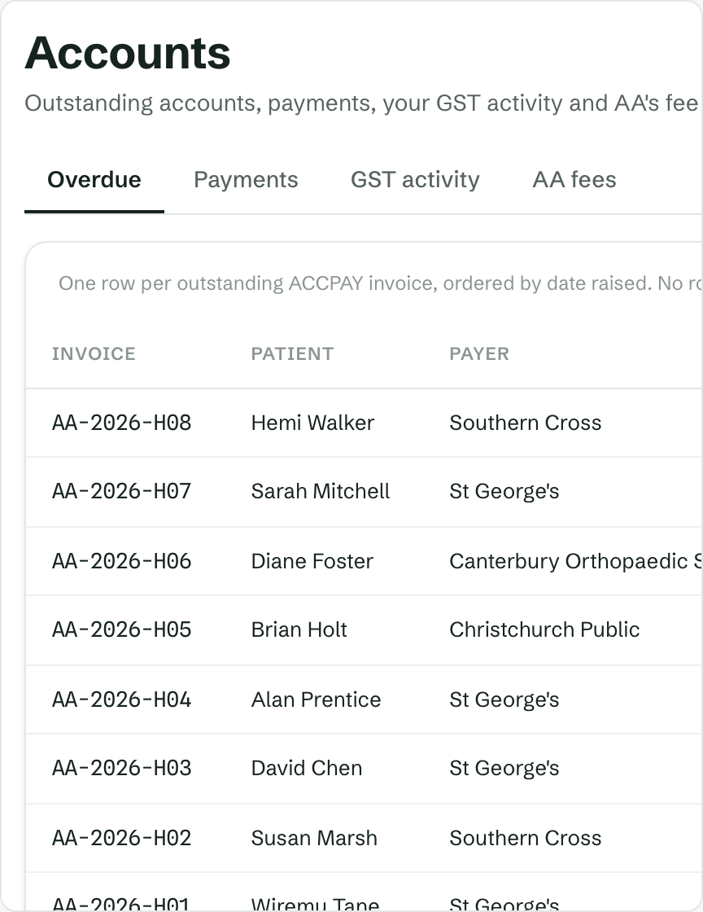
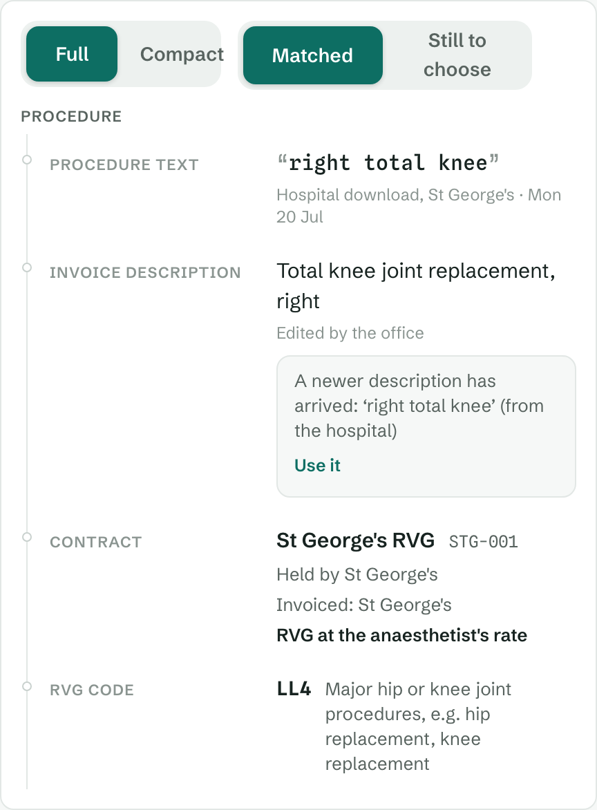

1
U01 Money formatting
Show an NZD amount.
U1Size S to MVisibility: HighFixes a bug
Today 3 helpers, ~25 display sites, 8 message sites
Three helpers plus about 25 hand-written $${x.toFixed(2)} display sites and 8 message sites. The office Booking total and the capture billing lines print "$3100.00"; Accounts and Invoices print "$3,100.00"; the procedure stack prints "Fixed price $3,100". All three appear in one scripted demo beat.
Becomes
formatMoney(n, { cents, sign }) in the existing domain/billing/money.ts, re-exported from shared/format.ts as formatCurrency. Grouped thousands everywhere.
Canonical look: The Accounts and Invoices format: "$3,100.00".


